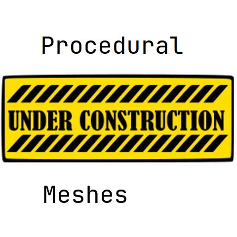

3D Graphics · WebGL

This project implements procedural generation of fundamental 3D meshes entirely on the GPU-side and CPU-side: Plane, Cube, Sphere, Torus, Cylinder, and Cone. Each mesh is built algorithmically by computing vertex positions, normals, and UV coordinates from mathematical formulas rather than loading an external file, giving full parametric control over subdivision level and dimensions.
Generating a torus requires tracking two radii (tube radius and ring radius) and correctly wrapping index buffers at the seam — getting the winding order wrong produces inside-out normals. This project gave me deep intuition for how mesh topology affects shading and taught me to think in terms of parameter space rather than explicit coordinates.